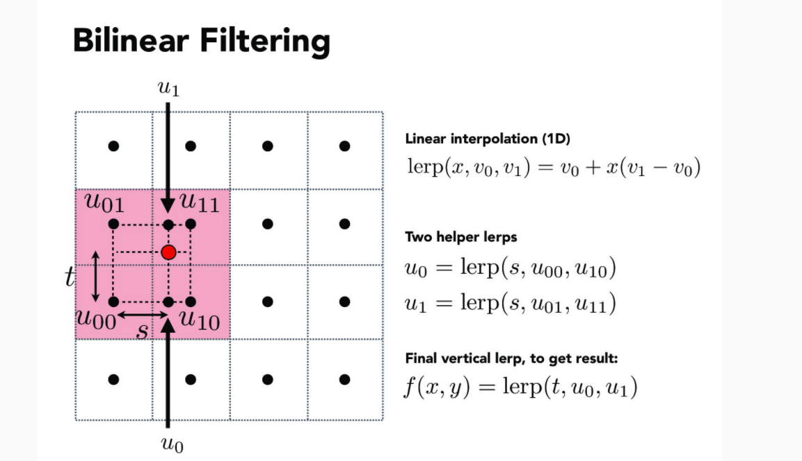

Project 1 Write-Up By Rui Wang & Dequan Zhang
Overview
In this project, we write code implementing the graphics techniques taught to us
until lecture 6 to rasterize, supersamle, interpolate colors, texture map for
triangle meshes, and we also implement transforming the graphs using matrices.
We learned many things from this project, one of such is using what we learn in
linear algerba and apply it to programing and see the result using C++ instead of
Python.
Task 1: Drawing Single-Color Triangles
First, I get the bounding box by getting the min, max of
x and y coordinates of the three triangle vertices. Then, I traverse through the
bounding box. For every pixel, I use the algorithm taught in lecture 2 to check if
the center of this pixel is within the triangle. If yes, then fill the sample buffer
with the given color.
This solution is no worse than one that checks each sample within
the bounding box of the triangle becuase in nature this solution is the same as it.
Below is a screenshot of the rendered "svg/basic/test4.svg":
 Basic test 4
Basic test 4
Extra credit: to accelerate, I use a boolean flag. In the beginning
of every outer iteration, I set the flag to be false. In the inner iteration, if the
point is inside the triangle, I set the flag to be true. Else, if the point is not in
the triangle but the flag is True, which means that the iteration had entered into the
triangle but now it comes out, I just break because it won't go into the triangle any
more. I used std::chrono::high_resolution_clock to check the time used for each
graph, and the comparison is below (they show time used for test 3, 4, 5, 6, and left
shows time before acceleration, while right shows time after acceleration):
 Before acceleration
Before acceleration
|
 After acceleration
After acceleration
|
Task 2: Antialiasing by Supersampling
It goes with the same iterations as task 1 does. But for every pixel,
it has two more layers of iterations, both traversing sqrt(sample_rate) so that I can
sample "sample_rate" number of points in every pixel. Also, I update the functions
set_sample_rate and set_framebuffer_target to make sure that the sample
buffer has capacity that matches the sample rate (height * width * sample_rate). Finally,
I update the resolve_to_framebuffer function to make sure that each pixel in
the frame buffer gets the averaged down value of the corresponding samples in sample
buffer.
Below are screenshots of "svg/basic/test4.svg" rendered with
sample rate at 1, 4, and 16:
 basic test 4, sample rate 1
basic test 4, sample rate 1
|
 basic test 4, sample rate 4
basic test 4, sample rate 4
|
 basic test 4, sample rate 16
basic test 4, sample rate 16
|
Extra credit: I used jittered sampling. There is a similarity between jittered and grid-based
sampling: both need to separate each pixel into an nxn grid with n^2 cells. The difference is
that grid-based sampling takes the value in the center of each cell, while jittered sampling
takes the value in the random position of each cell. Below is a comparison: (left is grid-based
sampling and right is the jittered sampling):
|
Grid-based supersampling
|
Jittered supersampling
|
Task 3: Transforms
This robot is weightlifting! I use transformation, scale, and rotate on exisiting polygon and created three more.
My robot
Task 4: Barycentric coordinates
Barycentric coordinate is a coordinate system that we
can use to interpolate values of points inside a triangle based on the
values of its vertices. The values include rgb values or texture coordinates.
Here is an image of a smoothly blended color triangle,
with red, green, blue vertex.
Barycentric coordinate explanation
Below is a png screenshot of "svg/basic/test7.svg" with default
viewing parameters and sample rate 1:
 Basic test 7
Basic test 7
Task 5: "Pixel sampling" for texture mapping
In TASK5, I reuse the code from TASK2 to establish the
iterations. But the work in the iterations are changed.
In each iteration,
I first get the sample point (x,y). Then, I calculate the barycentric coordinate
of (x,y) in the given triangle. Next, I use the barycentric coordinate and the uv coordinates
of the three vertices to calculate the uv coordinate of the sample point (x,y).
Next, I decide to call sample_nearest or sample_bilinear according to the psm. Then, I fill
the calculated color in the corresponding sample buffer position of (x,y).
sample_nearest: find the nearest texel according to the given uv coordinate, and return
the color at that texel.
sample_bilinear: find four nearest texels, get their colors, and use the lerp function we learnt
from lecture to do bilinear interpolation to get the color of uv:

Bilinear interpolation explanation
Here is a part of svg/texmap/test1.svg in which bilinear clear defeats nearest.
|
Nearest pixel sampling, rate 1
|
Nearest pixel sampling, rate 16
|
|
Bilinear pixel sampling, rate 1
|
Bilinear pixel sampling, rate 16
|
When the sampling rate is increased to 16, clearly both pixel sampling methods render very smooth
images and we do not really see much difference. However, when the sampling rate is 1, the bilinear
sampling method renders a much smoother image than nearest sampling method.
When the image data is
more continuous, containing elements or details that are not fully covered by each pixels, the bilinear
sampling method renders better image than the nearest method does.
Task 6: "Level sampling" with mipmaps for
texture mapping
Level sampling basically means to use texture sample on different
levels of mipmap according to the level calculated using formulas based on coordinate
differentials in the function get_level:
Level calculation explanation
To implement L_ZERO, I did not do anything special and
repeated the work I did for TASK5 as this is basically sampling on the full resolution
level.
To implement L_NEAREST, I use the get_level function, which
I impelmented to calculate the level number according to the dx_uv and dy_uv vectors.
I clip the level when the result is less than 0 or larger than max number of levels.
Below are screenshots of a png of my own respectively in [L_ZERO, P_NEAREST],
[L_ZERO, P_LINEAR], [L_NEAREST, P_NEAREST], [L_NEAREST, P_LINEAR]:
|
L_ZERO, P_NEAREST
|
 L_ZERO, P_LINEAR
L_ZERO, P_LINEAR
|
 L_NEAREST, P_NEAREST
L_NEAREST, P_NEAREST
|
 L_NEAREST, P_LINEAR
L_NEAREST, P_LINEAR
|
- Speed:
- Super sampling requires sampling multiple times per pixel, and averaging
down the colors when writing to the frame.
- The time cost of Nearest sampling is very small. While in bilinear pixel sampling,
we generally need to access the memory 4 times, then interpolate the color of the
sample. But this should be faster than supersampling in many cases as supersampling
may require 16 or even more samples per pixel.
-
In this project, level sampling is based on the pixel sampling. Level Zero sampling
has little introduction work to do, so it is very close to the pixel sampling it calls.
Both Nearest level sampling and bilinear sampling requires calculating the differentials
in uv coordinate w.r.t x and y, and calculating the level based on them. So, the introduction
work costs some time. In bilinear level sampling, we have to get the color from two levels
and then lerp the result. This costs even more time.
- Memory: The only two methods that cost more memory are the supersampling (grid-based or jittered as
in ec), and level sampling. In supersampling, we would have to scale up the capacity of the whole
sample buffer in order to store the more samples. In level sampling, as we are storing multiple mipmap
levels, according to mathematics, we need 4/3 of our original memory. (Here the discussion does not include
memory usage in introduction work pixel sampling or level sampling)
- Antialiasing power: In this project, we can get better Antialiasing effect by using higher sampling
rate, bilinear pixel and level sampling.
-
We think supersampling gives best antialiasing power. Supersampling antialiases in a "greedy" or
"brute-force" way. The cost is increasing amount of time and memory usage. It is often times too
expensive.
-
Level sampling also has a good antialiasing power. If we keep the same pixel sampling method and switches
level sampling method, we can see very clear change. And in nature it resolves the artifacts caused by
texture with high resolution corresponding to objects far away.
-
Pixel sampling also has some good antialiasing. Actually, how we implemented bilinear pixel sampling
reminds us of supersampling in some way. So we think they have similar power with certain sampling rate.
So, in general, bilinear pixel sampling does not cost much time and memory, but has good
antialiasing effect when we use lower cost. Both bilinear and nearest level sampling has a strong antialiasing power
for high resolution texture for object of some distance, while level sampling does cost some more time and memory
usage(but not much, note that mipmap levels only require to 1/3 more memory). Supersampling can be most powerful in
antialiasing, but it can also be most expensive.
Potential Extra Credit
I wrote a python script to generate the elements constituting the image in svg file.
I try to draw a shape with wave-like upper and down boundaries. So I used cosine and sine
functions in the range i = [0,600]. I divide i by 10 to make the wave not so radical, and multiply
the result of the cosine and sine functions by 10 to enlarge the amplitude of the wave. Now I get the
1202 points (601 up and 601 down), I construct 600 rectangles out of them, taking every two of the
upper points and every two of the down points, and further divide these rectangles into two triangles.
I made two of this shape. One is filled with grey color, another filled with colors changing from
(1,0,0) to (0,0,1) (upper vertices) and (0,1,0) to (1,0,1) (bottom vertices). These
triangles are interpolated by the colors at its vertices.
What I like of this pair of shapes
is that it looks like the grey one is the shadow of the colorful one.